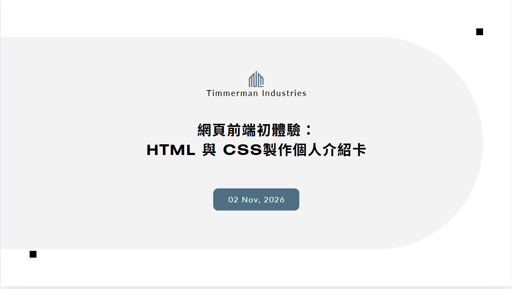
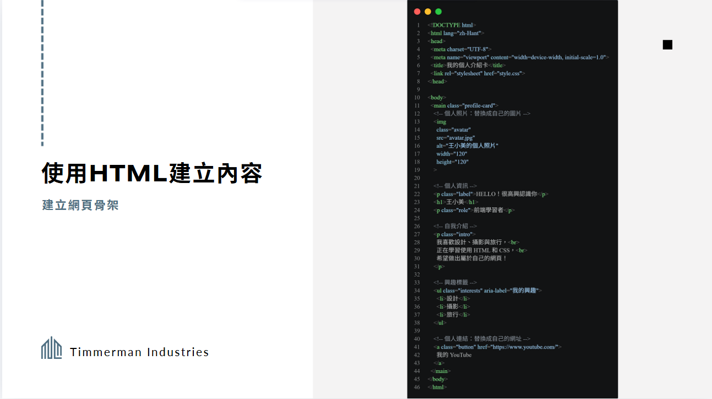
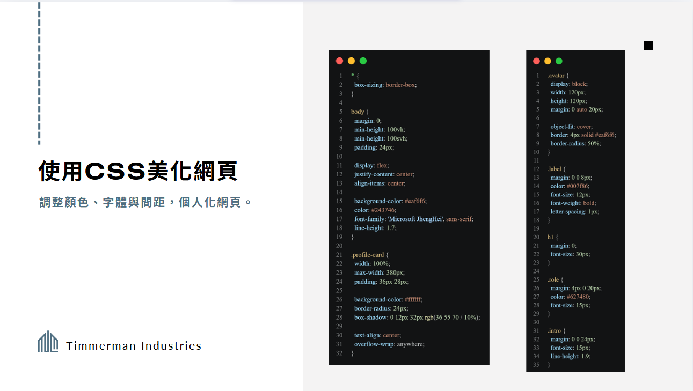

單元 01 ／ 約 4 分鐘
認識網頁前端
了解 HTML 與 CSS 的分工，看看網頁如何從結構變成畫面。
- HTML：內容與結構
- CSS：樣式與外觀
一步一步，打造你的第一張個人介紹卡。

了解 HTML 與 CSS 的分工，看看網頁如何從結構變成畫面。
加入姓名、自我介紹，建立介紹卡基本功能


調整顏色、字體與間距，打造具有個人風格的介紹卡。
修改姓名、自我介紹與背景顏色，完成後繳交作品截圖。